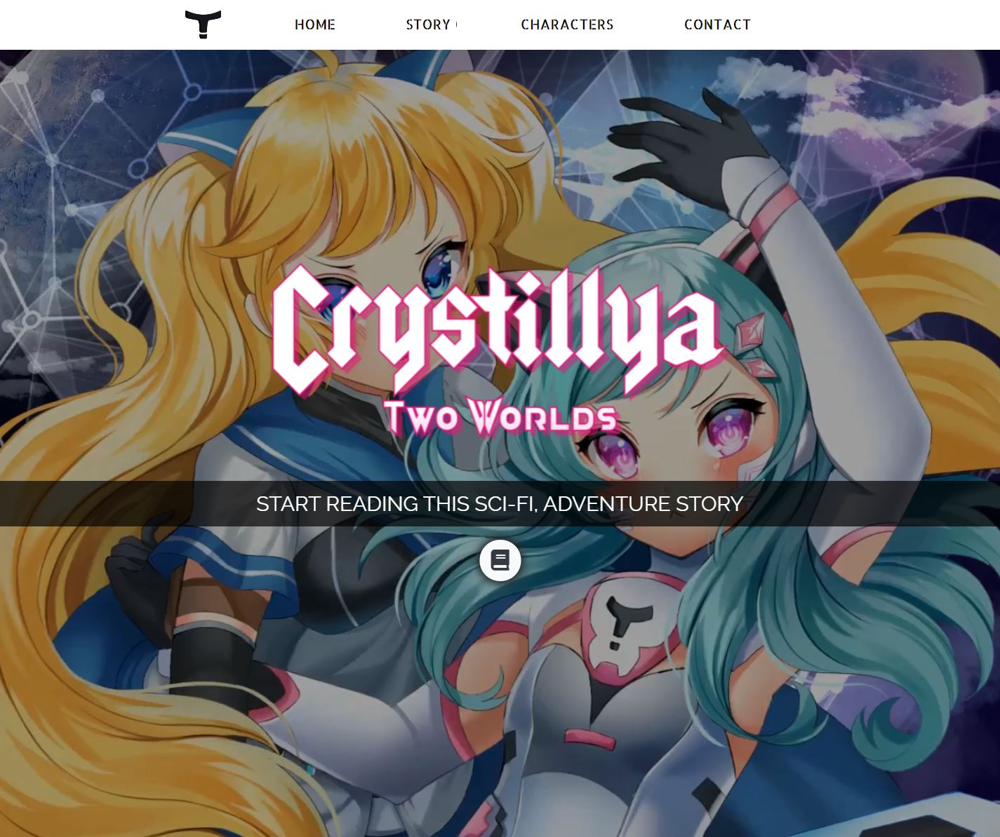
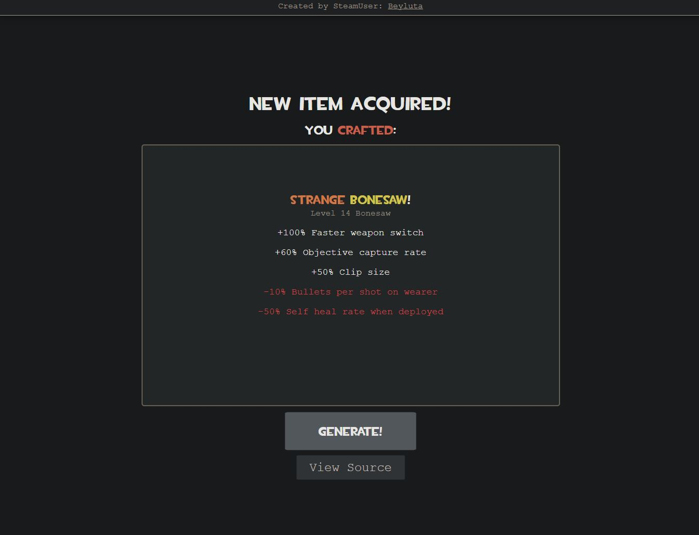

Hi 👋 I'm a professional Software Engineer. I build Websites, Apps, Server-, and Desktop
programs.AboutProjects
About
Be it Front-End, Back-End, Applications, Websites or PC Programs. You name it- I can make it 🚀.
With proficiency in High- to Low level programming languages, it will be hard to find someone who can do both
well. Luckily for you, the search has come to an end! I'm exactly the guy you were looking for.
Below is a list of some of my personal projects, these are just a fraction of the stuff I have made over the
years.
ShortsBlocker is a Swift-based Safari Extension designed to block YouTube Shorts from appearing while you
browse YouTube.View Source2025 - Maintained
TermChat - A.I. Tool for your Terminal
TermChat is an A.I. Chatbot integrated directly into your Linux terminal. You can preconfigure it with
instructions to follow and make it your own personal computer assistant.View Source2023 - Maintained
Celestune - Music Player
Cross-platform music player PWA made to replace Spotify for private use. Automatically synchronizes user
settings between devices and can save songs to the device itself for faster playback.View
Project2022 - Maintained
WinWidgets for Windows 10 / 11
WinWidgets makes web-based desktop widgets easy to develop. Using HTML, CSS, and JavaScript create your own
Windows 11 widgets on the fly.View Project2021 - Maintained
Larby Database
A key-value store like REDIS built with C++ with support for Windows, MacOS, and Linux.2021
Crystillya Boundless: Puzzle Game
A puzzle game inspired by the early flash game: Fireboy and Watergirl. Made with the Unity Engine for a game
jam.View Project2021
Website with Firebase integration
Website for a story that I was writing back in 2021. It integrates with Firebase to save chapters and
telemetry of the novel to the database.

View
Project2021
Random stats generator for Team Fortress 2
A hobby project built with the Angular framework works with any modern browser.

View Project2020
Switzerland grade calculator
Calculates the total grade of a subject by its individual grades and their weights.View Project2019
Nixie and Feuer: Puzzle Game
A puzzle where you control two characters and solve puzzles to advance through the levels.View Project

 View Source
View Source
 About
Projects
About
Projects

 View
Project
View
Project